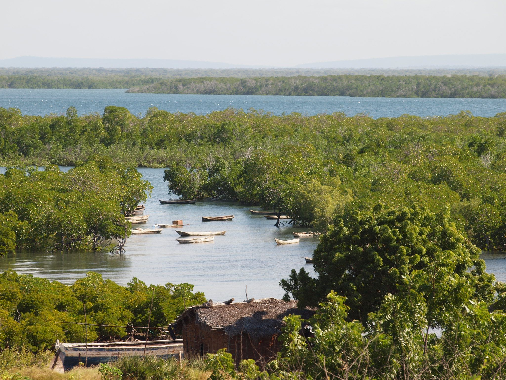

Kilwa is one of six administrative districts of Lindi Region in Tanzania. It has a total area of 13,347.50 square kilometers, Kilwa district has 5 Islands, with the largest one being Kilwa Kisiwani. The other islands in the Kilwa archipelago are Island and Songo Mnara Island. In addition, the Songosongo Islands archipelago is composed of 21 coral reefs including the 4 coral islands. The four Islands in the archipelago are Fanjove, Nyuni Island, Songo Songo and Okuza Island. Kilwa District is home to Pindiro Forest Reserve where albino hippopotamuses have been observed.
The Matandu River is the largest river running west to east of Kilwa district. The other rivers found in the district are the Mbwemkuru River, Matandu River and the Mavuji River. There is also a cave system in Kipatimu ward, the Nan'goma Cave. The cave system is located in the Matumbi Highlands which are shared between Kilwa District and Rufiji District in Pwani Region.
Historicaly he area that is now Kilwa district has been inhabited by humans for thousands of years. The area is the ancestral home to three Bantu people groups, namely the Mwera people and the Matumbi people together with the Machinga people. The Matumbi being historically the majority native group inhabiting the most land in the district. They are the natives of the entire central and northern Kilwa district and Kilwa's islands. The Machinga people are native to the south eastern section of the district to the border with Lindi District. The Mwera inhabit the south west part of the district.
Best time to visit: Year-round - enquire for seasonal highlights
Recommended duration: 1 - 3 days recommended
Entry cost: Park fees vary - contact us for current rates

Safari Packages

Lake Maliwe, Kilwa
Price on request
Maliwe is a peaceful lake where a few fishermen can take you on canoes dugout from a single log to observe the wildlife. Hippos and crocodiles can easily be seen, wide colonies of
View Itinerary
Mkurukara Caves, Kilwa
Price on request
Mkurukara means “leader “, it was used as a shelter by a leader and his followers. There are 2 caves, one that served as a shelter, and the other that supplied fresh water. This wa
View Itinerary
Mwanakiwambi, Kilwa
Price on request
This is an archeological site that has not yet been conserved. It is therefore difficult to interpret the wall remains but the ruins are very close to the water shore. In this part
View Itinerary
Namaingo Caves, Kilwa
Price on request
The Namaingo caves are interesting to visit for their network of organic corridors leading to different rooms, rivers and water reservoirs. The cave is sometimes used as well in th
View Itinerary
Nandembo Caves, Kilwa
Price on request
Nandembo Caves in Kilwa can be seen around Nandembo village. We recommend avoiding walking through Nangoma cave to stay away from the huge colony of bats. But the entrance with its
View Itinerary
Pandawe Malalani, Kilwa
Price on request
It is said that in this area, Unji Bin Unuki, a very tall person, sank in the mud. This legend is supported by a series of stones that represent his kitchen and footprints carved i
View Itinerary
Rukila Island, Kilwa
Price on request
An Island in Kilwa, the southern coast of Tanzania houses the highest levels of coral and fish biodiversity in the region. Snorkeling or scuba diving on a coral reef is unforgettab
View Itinerary
Tung’ande Cave, Kilwa
Price on request
This cave is well ventilated and easy to visit without using artificial light. The various rooms exhibit amazing shapes created by stalactites and stalagmites, including an elephan
View ItineraryReady to explore Kilwa?
Request a Quote